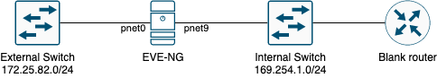

Automatic Cisco XR provisioning with ZTP¶

This article explores how to optimize the provisioning of a hundred Cisco XR devices, so that they are configured with minimal human intervention. Depending on the context, the devices may be shipped directly from the factory and configured automatically on site or, more likely, configured automatically in a lab, verified and then shipped for installation. We rely on ZTP (Zero Touch Provisioning), which lets us configure a factory-delivered device without any human intervention. ZTP is vendor-specific, and on Cisco XR it requires:
- A DHCP server that assigns an IP address to the devices.
- A web server that generates a configuration for each device.
- The devices powered on, so they can acquire an IP address via DHCP and reach the web server.
In the scenario we envision, we set up a lab where the devices are unboxed, configured automatically, packaged and shipped to the final destination. There, non-technical personnel install the devices, connect the network cables and power them on. We assume no technical skills at the remote sites and no possibility of sending technical personnel.
Let's go into the details.
Lab Network Configuration¶
We set up the lab with a Linux system that has two network interfaces: pnet0 connects the system to the corporate network, and pnet9 connects it to a dedicated, isolated network. The devices to configure are connected to a dedicated physical switch, whose gateway is the pnet9 interface of the Linux system.

On the Linux system, we use Dnsmasq configured as follows:
port=0
interface=pnet9
dhcp-range=169.254.1.0,169.254.1.253,30d
dhcp-option=67,http://169.254.1.1:8080/ztp
log-dhcp
Dnsmasq serves the 169.254.1.0/24 network, assigns free IP addresses to the clients and keeps each assignment for 30 days. The DHCP replies include the URL for the ZTP auto-configuration. The DHCP requests are logged via syslog, typically saved in /var/log/syslog.
Configuration Setup¶
The web server, reachable at the address configured in the previous section, must:
- Make a Bash script available to all the devices.
- Generate a specific configuration for each device.
- Make the correct configuration available to each device.
We use Flask to create a small web application that generates the configuration of each device dynamically. The application responds to two URLs:
/ztp(GET), which makes the Bash script available to Cisco XR devices./config(POST), which makes the specific configuration available to each device that sends its serial number.
Once ready, we can run the Flask application with:
We make sure that the application listens on the correct interface and that both URLs respond correctly:
wget -q -O- http://169.254.1.1:8080/ztp
wget -q -O- --post-data="serial=1234" http://169.254.1.1:8080/config
The /ztp URL returns text similar to the following, identical for all the devices:
#!/bin/bash
export CONFIG_FILE="/tmp/config.txt"
source /pkg/bin/ztp_helper.sh
SN=$(dmidecode | grep -m 1 "Serial Number:" | awk '{print $NF}')
PN=$(xrcmd "show inventory location 0/RP" | grep -m1 "PID" | awk '{print $2}')
RESULT=$(wget -O- --post-data="serial=${SN}&model=${PN}" {{ url }} > $CONFIG_FILE)
xrapply_with_reason "Initial ZTP configuration" $CONFIG_FILE
After acquiring an IP address via DHCP, the device retrieves this script. The script gets the serial number (via dmidecode) and the model (via show inventory). With these parameters, the device requests the second URL to obtain its initial configuration.
Based on the parameters passed in the POST, the /config URL returns the minimal configuration that makes the device accessible via SSH:
username cisco
group root-lr
password 0 cisco
!
hostname device01
!
domain name example.com
!
vrf OOB address-family ipv4 unicast
!
router static vrf OOB address-family ipv4 unicast
0.0.0.0/0 169.254.1.1
!
interface MgmtEth0/0/CPU0/0
vrf OOB
ipv4 address 169.254.1.11 255.255.255.0
no shutdown
!
ssh server v2
ssh server vrf OOB
!
line default
transport input ssh
Power On and ZTP Process Verification¶
We have reached the final and most critical step: powering on the device and verifying that the ZTP process works correctly. When we start a factory-new Cisco XR device, the ZTP process should start immediately after the legal notice about the cryptographic features:
This product contains cryptographic features and is subject to United
States and local country laws governing import, export, transfer and
use. Delivery of Cisco cryptographic products does not imply third-party
authority to import, export, distribute or use encryption. Importers,
exporters, distributors and users are responsible for compliance with
U.S. and local country laws. By using this product you agree to comply
with applicable laws and regulations. If you are unable to comply with
U.S. and local laws, return this product immediately.
A summary of U.S. laws governing Cisco cryptographic products may be
found at:
http://www.cisco.com/wwl/export/crypto/tool/stqrg.html
If you require further assistance please contact us by sending email to
export@cisco.com.
RP/0/RP0/CPU0:Oct 18 08:11:22.659 UTC: ifmgr[363]: %PKT_INFRA-LINK-3-UPDOWN : Interface MgmtEth0/RP0/CPU0/0, changed state to Down
RP/0/RP0/CPU0:Oct 18 08:11:22.661 UTC: ifmgr[363]: %PKT_INFRA-LINK-3-UPDOWN : Interface MgmtEth0/RP0/CPU0/0, changed state to Up
RP/0/RP0/CPU0:Oct 18 08:11:29.975 UTC: pyztp2[330]: %INFRA-ZTP-4-CONFIG_INITIATED : ZTP has initiated config load and commit operations
RP/0/RP0/CPU0:Oct 18 08:11:47.203 UTC: pyztp2[330]: %INFRA-ZTP-4-CONFIG_FINISHED : ZTP has finished config load and commit operations
RP/0/RP0/CPU0:Oct 18 08:11:53.034 UTC: pyztp2[330]: %INFRA-ZTP-4-PROVISIONING_COMPLETED : ZTP has successfully completed the provisioning
RP/0/RP0/CPU0:Oct 18 08:11:59.329 UTC: pyztp2[330]: %INFRA-ZTP-4-EXITED : ZTP exited
If the ZTP process worked correctly, the DHCP server has assigned an IP address:
2023-10-18T11:32:42.306237+02:00 kali dnsmasq-dhcp[3818]: 548912439 vendor class: PXEClient:Arch:00009:UNDI:003010:PID:N540-ACC-SYS
2023-10-18T11:32:42.306699+02:00 kali dnsmasq-dhcp[3818]: 548912439 user class: xr-config
2023-10-18T11:32:42.306856+02:00 kali dnsmasq-dhcp[3818]: 548912439 DHCPDISCOVER(pnet9) 40:14:82:c1:11:11
2023-10-18T11:32:42.307036+02:00 kali dnsmasq-dhcp[3818]: 548912439 tags: pnet9
2023-10-18T11:32:42.307208+02:00 kali dnsmasq-dhcp[3818]: 548912439 DHCPOFFER(pnet9) 169.254.1.11 40:14:82:c1:11:11
2023-10-18T11:32:42.309068+02:00 kali dnsmasq-dhcp[3818]: 548912439 requested options: 1:netmask, 28:broadcast, 2:time-offset, 3:router,
2023-10-18T11:32:42.309925+02:00 kali dnsmasq-dhcp[3818]: 548912439 requested options: 15:domain-name, 6:dns-server, 12:hostname,
2023-10-18T11:32:42.310094+02:00 kali dnsmasq-dhcp[3818]: 548912439 requested options: 67:bootfile-name, 43:vendor-encap, 143
2023-10-18T11:32:42.310183+02:00 kali dnsmasq-dhcp[3818]: 548912439 next server: 169.254.1.1
2023-10-18T11:32:42.310289+02:00 kali dnsmasq-dhcp[3818]: 548912439 sent size: 1 option: 53 message-type 2
2023-10-18T11:32:42.310366+02:00 kali dnsmasq-dhcp[3818]: 548912439 sent size: 4 option: 54 server-identifier 169.254.1.1
2023-10-18T11:32:42.310433+02:00 kali dnsmasq-dhcp[3818]: 548912439 sent size: 4 option: 51 lease-time 30d
2023-10-18T11:32:42.310531+02:00 kali dnsmasq-dhcp[3818]: 548912439 sent size: 4 option: 58 T1 15d
2023-10-18T11:32:42.311451+02:00 kali dnsmasq-dhcp[3818]: 548912439 sent size: 4 option: 59 T2 26d6h
2023-10-18T11:32:42.311641+02:00 kali dnsmasq-dhcp[3818]: 548912439 sent size: 4 option: 1 netmask 255.255.255.0
2023-10-18T11:32:42.311775+02:00 kali dnsmasq-dhcp[3818]: 548912439 sent size: 4 option: 28 broadcast 169.254.1.255
2023-10-18T11:32:42.312018+02:00 kali dnsmasq-dhcp[3818]: 548912439 sent size: 4 option: 3 router 169.254.1.1
2023-10-18T11:32:42.312554+02:00 kali dnsmasq-dhcp[3818]: 548912439 sent size: 25 option: 67 bootfile-name http://169.254.1.1:8080/ztp
The web server has also been contacted on the two URLs:
* Serving Flask app 'ztp'
* Debug mode: off
WARNING: This is a development server. Do not use it in a production deployment. Use a production WSGI server instead.
* Running on http://169.254.1.1:8080
Press CTRL+C to quit
169.254.1.11 - - [18/Oct/2023 14:47:06] "GET /ztp HTTP/1.1" 200 -
169.254.1.11 - - [18/Oct/2023 14:47:33] "POST /config HTTP/1.1" 200 -
At this point, the device is reachable and ready to be configured by secondary automation systems such as Ansible.
Development and Troubleshooting¶
The ZTP process described may look simple and straightforward, but it required several hours of testing to understand where and how it stalled. Let's see which tools we have for troubleshooting.
We can see the ZTP status with the show ztp status command:
The ZTP process runs only if the router has factory settings; otherwise, it is skipped. If our router is not factory-new, we have two options, both useful.
We can force the ZTP process from the command line:
Or we can delete the configuration and reset ZTP, again from the command line:
The ZTP logs are stored on the device and we can view them with show ztp logging. Relying only on these logs is inconvenient, though, because each boot takes several minutes. The best solution I found was to use the Bash shell available on Cisco XR devices and invoke the script manually:
Typed from the console, these commands open a Bash instance and execute the script served by our application. When the script completes, the device should be configured as expected.